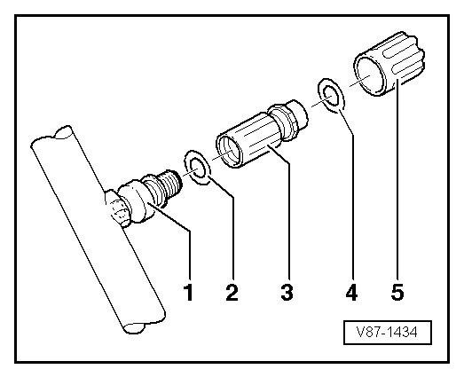

Evacuating and Charging Valve, Low Pressure Side
Refrigerant Circuit
Evacuating and Charging Valve, Low Pressure Side
Special tools, testers and auxiliary items required
• Extract refrigerant e.g. using A/C Service Station (VAS 6007A).
• Torque Wrench (V.A.G 1783)
• Ratchet Insert 1/4"" (VAS 6234)
• Evacuating and Charging Valve Adapter Set (T10364)
Removing

CAUTION!
There is a danger of ice-up.
Refrigerant leaks out if refrigerant circuit is not discharged.
Refrigerant must be extracted before opening the refrigerant circuit. If the refrigerant circuit is not opened within 10 minutes after extracting it, pressure may build up in the circuit again. The refrigerant must be extracted again.
- Extract refrigerant circuit, e.g. using A/C Service Station (VAS 6007A), only then open the refrigerant circuit.
- Observe notes. Refer to--> [ Engine Compartment Refrigerant Circuit Components, 2 Zone and 4 Zone ] Engine Compartment Refrigerant Circuit Components, 2 Zone and 4 Zone.
1 Connection with external thread and groove for O-ring
2 O-Ring 7.6 mm; 1.8 mm
3 Extraction and filling valve (10 -2 Nm) with groove and internal thread for cap.
4 O-Ring 7.6 mm; 1.8 mm
5 Cap